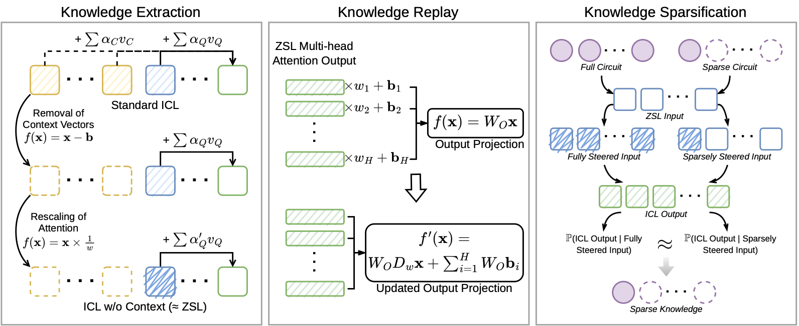
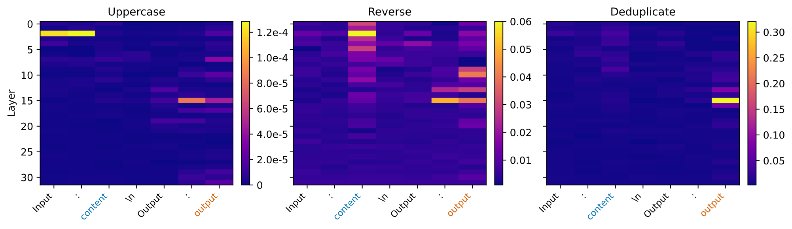
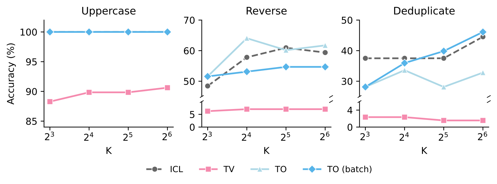

Capturing In-Context Learning Dynamics with Task Operators
In-context learning (ICL) lets a language model pick up a task from a few demonstrations, but every query has to reprocess them, and methods that compress ICL into fixed activation vectors break down when the output depends closely on the input. We show that ICL changes every attention head in an exact, affine way. Task Operator (TO) extracts that change once and replays it through the attention output projection, so inference needs no demonstrations and no training, and costs the same as zero-shot.
- Best overall among methods that extract and replay ICL (Task Vectors, Function Vectors, In-Context Vectors, Conceptors) across 4 LLMs and 8 tasks.
- Recovers most of the ICL gain where fixed vectors fail: 60.16% on Qwen3-8B Reverse, versus 21.09% for the best baseline and 67.19% for 8-shot ICL.
- With 8 demonstrations and no training, it outperforms trained input-dependent methods (ATV, ICR) in every setting but one, even when they train on up to 16× more examples.
- Averaging operators over disjoint 8-shot batches scales to 64 demonstrations without a longer context.
ICL is an affine update to every attention head
Split a head's attention between the demonstration tokens \(\mathcal{C}\) and all other tokens. Renormalizing the softmax over the non-demonstration tokens gives the context-masked output \(\mathbf{u}'\), and the head output under ICL is then exactly
with demonstrations
output, rescaled
from demonstrations
The identity holds for every input, head, and layer, and the parameters \((w, \mathbf{b})\) are stable across queries of the same task. Folding them into the attention output projection, \(\widetilde{\mathbf{W}}_O = \mathbf{W}_O \mathbf{D}_w\) and \(\widetilde{\mathbf{b}}_O = \mathbf{W}_O \mathbf{B} + \mathbf{b}_O\), turns ICL into an input-dependent reparameterization that can be replayed without the demonstrations.
Task Operator: extract once, replay at zero-shot cost

- Record \((w, \mathbf{b})\) for every head at every layer and token position of an ICL forward pass.
- Average over a small set of unlabeled validation queries.
- Template tokens get their own operators; content and generation positions share averaged ones.
- Run the zero-shot prompt with the same template.
- Swap in the updated projection at template, content, and generation positions.
- \(w\) rescales the current head outputs, so the intervention stays input-dependent.
- Patch one (layer, token) site back to identity: \(w \leftarrow 1,\ \mathbf{b} \leftarrow \mathbf{0}\).
- Measure how much of the operator's log-likelihood gain is lost.
- The resulting importance maps reveal sparse, task-specific circuits.
Closing the gap to in-context learning
We evaluate four LLMs on eight tasks: two lexical (Translation, Linguistic), three algorithmic (Uppercase, Reverse, Deduplicate), and three reasoning (GSM8K, MATH500, GPQA-Diamond). Every extraction method uses the same \(K = 8\) demonstrations; zero-shot (ZSL) and 8-shot ICL are shown for reference.
Test accuracy (%) across models and tasks. Select a model to view its results.
| Lexical | Algorithmic | Reasoning | ||||||
|---|---|---|---|---|---|---|---|---|
| Method | Translation | Linguistic | Uppercase | Reverse | Deduplicate | GSM8K | MATH500 | GPQA |
| 8-shot ICL | 69.53 | 73.44 | 100.00 | 43.75 | 24.22 | 89.39 | 55.80 | 37.88 |
| ZSL | 0.00 | 0.00 | 0.00 | 0.00 | 0.00 | 74.53 | 23.60 | 17.68 |
| TV | 43.75 | 49.22 | 92.19 | 1.56 | 0.00 | 81.05 | 28.00 | 21.21 |
| FV | 0.00 | 17.97 | 94.53 | 0.00 | 16.41 | 73.16 | 26.00 | 15.15 |
| ICV | 0.00 | 0.00 | 0.00 | 0.00 | 0.00 | 74.83 | 23.80 | 20.20 |
| Conceptor | 38.28 | 50.78 | 96.09 | 0.78 | 0.78 | 79.83 | 26.20 | 16.16 |
| TO (Ours) | 67.19 | 71.09 | 100.00 | 39.06 | 17.19 | 86.20 | 51.20 | 33.33 |
| Lexical | Algorithmic | Reasoning | ||||||
|---|---|---|---|---|---|---|---|---|
| Method | Translation | Linguistic | Uppercase | Reverse | Deduplicate | GSM8K | MATH500 | GPQA |
| 8-shot ICL | 68.75 | 82.81 | 100.00 | 67.19 | 76.56 | 90.75 | 61.20 | 34.85 |
| ZSL | 0.00 | 0.00 | 0.00 | 0.00 | 0.00 | 58.76 | 19.00 | 21.21 |
| TV | 49.22 | 64.84 | 94.53 | 9.38 | 9.38 | 73.69 | 26.00 | 22.73 |
| FV | 36.72 | 53.91 | 98.44 | 21.09 | 57.03 | 63.61 | 22.40 | 19.70 |
| ICV | 0.00 | 1.56 | 0.00 | 0.00 | 0.00 | 59.74 | 20.00 | 21.21 |
| Conceptor | 49.22 | 60.94 | 91.41 | 4.69 | 4.69 | 70.74 | 25.40 | 18.18 |
| TO (Ours) | 67.19 | 75.00 | 100.00 | 60.16 | 65.62 | 78.62 | 50.60 | 33.33 |
| Lexical | Algorithmic | Reasoning | ||||||
|---|---|---|---|---|---|---|---|---|
| Method | Translation | Linguistic | Uppercase | Reverse | Deduplicate | GSM8K | MATH500 | GPQA |
| 8-shot ICL | 66.41 | 75.78 | 100.00 | 21.88 | 33.59 | 69.98 | 27.20 | 24.24 |
| ZSL | 0.00 | 3.91 | 0.00 | 0.00 | 0.00 | 58.15 | 24.80 | 26.26 |
| TV | 30.47 | 71.09 | 86.72 | 0.78 | 2.34 | 59.06 | 27.60 | 25.76 |
| FV | 39.84 | 63.28 | 93.75 | 1.56 | 2.34 | 62.62 | 26.00 | 24.75 |
| ICV | 0.00 | 4.69 | 0.00 | 0.00 | 0.00 | 58.00 | 24.80 | 30.81 |
| Conceptor | 28.12 | 1.56 | 87.50 | 0.00 | 3.12 | 57.32 | 26.80 | 23.74 |
| TO (Ours) | 67.97 | 75.78 | 100.00 | 31.25 | 24.22 | 67.78 | 25.20 | 22.73 |
| Lexical | Algorithmic | Reasoning | ||||||
|---|---|---|---|---|---|---|---|---|
| Method | Translation | Linguistic | Uppercase | Reverse | Deduplicate | GSM8K | MATH500 | GPQA |
| 8-shot ICL | 71.09 | 82.81 | 100.00 | 48.44 | 37.50 | 80.14 | 28.80 | 26.26 |
| ZSL | 1.56 | 10.94 | 0.00 | 0.00 | 0.00 | 37.91 | 27.60 | 23.74 |
| TV | 53.12 | 75.00 | 88.28 | 6.25 | 2.34 | 41.32 | 26.00 | 20.71 |
| FV | 64.06 | 63.28 | 50.78 | 6.25 | 2.34 | 41.70 | 28.20 | 23.23 |
| ICV | 1.56 | 10.16 | 0.00 | 0.00 | 0.00 | 39.58 | 26.60 | 26.26 |
| Conceptor | 47.66 | 41.41 | 82.03 | 7.03 | 2.34 | 38.67 | 31.80 | 25.25 |
| TO (Ours) | 71.88 | 81.25 | 100.00 | 51.56 | 28.12 | 75.82 | 25.40 | 23.74 |
ICL uses \(K = 8\) demonstrations in the prompt; all other rows run without demonstrations. Bold marks the best method without demonstrations.
- On lexical tasks and Uppercase, where Task Vectors already recover much of the ICL gain, TO matches or exceeds the best baseline and comes close to ICL.
- On Reverse and Deduplicate, where the output depends intricately on the input, fixed-vector baselines largely fail while TO recovers much of the ICL gain.
- TO mirrors ICL rather than adding a generic boost: when ICL itself barely helps, as on MATH500 and GPQA for the Llama models, TO does not improve over zero-shot either.
Versus trained input-dependent methods
ATV and ICR learn input-dependent interventions from \(K \in \{8, 32, 128\}\) training examples. With only eight demonstrations and no training, TO outperforms both in every setting except Qwen3-4B Deduplicate, where only ATV with 16× more examples surpasses it.
Trained input-dependent methods vs. training-free TO. Accuracy (%).
| ATV (trained) | ICR (trained) | TO (training-free) | ||||||
|---|---|---|---|---|---|---|---|---|
| Model | Task | K = 8 | 32 | 128 | K = 8 | 32 | 128 | K = 8 |
| Qwen3 (4B) | Deduplicate | 3.1 | 15.6 | 26.6 | 10.2 | 6.2 | 13.3 | 17.2 |
| Translation | 10.2 | 25.0 | 48.4 | 3.9 | 6.2 | 4.7 | 67.2 | |
| Qwen3 (8B) | Deduplicate | 56.2 | 42.2 | 60.9 | 32.0 | 42.2 | 42.2 | 65.6 |
| Translation | 50.8 | 60.2 | 64.8 | 2.3 | 4.7 | 5.5 | 67.2 | |
The advantage also holds across randomly sampled demonstrations: over 10 seeds on Qwen3-8B Deduplicate, TO reaches 63.9 ± 8.7, versus 55.8 ± 5.8 for Function Vectors and 6.9 ± 2.7 for Task Vectors.
Where ICL knowledge lives, and how it scales
Sparse, task-specific circuits
Importance maps on Llama3.1-8B show that the knowledge captured by TO sits in a small subset of sites, and where that subset is depends on the task. Uppercase relies on template tokens within a few layers; Reverse spreads across template and content tokens; Deduplicate concentrates on output positions in the middle layers. Methods that intervene only at fixed template positions miss the knowledge that the more complex tasks need.

Many-shot scaling without a longer context
Extracting one operator from a very long prompt becomes noisy as \(K\) grows, because \(w\) approaches zero. Averaging operators from disjoint 8-shot batches, denoted TO (batch), gives non-decreasing accuracy up to \(K = 64\) and even surpasses standard ICL on Deduplicate at \(K = 64\), while each forward pass only sees eight demonstrations.

What makes the operator work
On Qwen3-4B, lexical tasks and Uppercase rely almost entirely on template positions, whereas Reverse, Deduplicate, and the reasoning tasks also need content and output positions. At template positions, the scaling \(w\) and the bias \(\mathbf{b}\) are individually insufficient, since each alone collapses to zero accuracy on the non-reasoning tasks, but together they recover ICL behavior.
Position-type and affine-component ablations on Qwen3-4B. Accuracy (%).
| Lexical | Algorithmic | Reasoning | ||||||
|---|---|---|---|---|---|---|---|---|
| Setting | Translation | Linguistic | Uppercase | Reverse | Deduplicate | GSM8K | MATH500 | GPQA |
| 8-shot ICL | 69.53 | 73.44 | 100.00 | 43.75 | 24.22 | 89.39 | 55.80 | 37.88 |
| Position types receiving the operator | ||||||||
| Template + Content + Output | 67.19 | 71.09 | 100.00 | 39.06 | 17.19 | 86.20 | 51.20 | 33.33 |
| Template + Output | 67.19 | 71.09 | 100.00 | 8.59 | 10.94 | 85.44 | 53.60 | 29.29 |
| Template + Content | 66.41 | 70.31 | 100.00 | 17.97 | 2.34 | 77.26 | 50.00 | 23.74 |
| Affine components at template positions | ||||||||
| Template (\(w\) + \(\mathbf{b}\)) | 67.19 | 71.88 | 100.00 | 7.81 | 9.38 | 79.61 | 47.20 | 22.22 |
| Template (\(w\) only) | 0.00 | 0.00 | 0.00 | 0.00 | 0.00 | 79.83 | 31.40 | 17.68 |
| Template (\(\mathbf{b}\) only) | 0.00 | 0.00 | 0.00 | 0.00 | 0.00 | 34.87 | 10.20 | 19.19 |
The top rows vary which position types receive the operator; the bottom rows isolate the scaling (\(w\)) and bias (\(\mathbf{b}\)) components at template positions.
BibTeX
@inproceedings{xiong2026capturing,
title = {Capturing In-Context Learning Dynamics with Task Operators},
author = {Guangzhi Xiong and Zhenghao He and Bohan Liu and Sanchit Sinha and Wenqian Ye and Aidong Zhang},
booktitle = {Advances in Neural Information Processing Systems (NeurIPS)},
year = {2026}
}